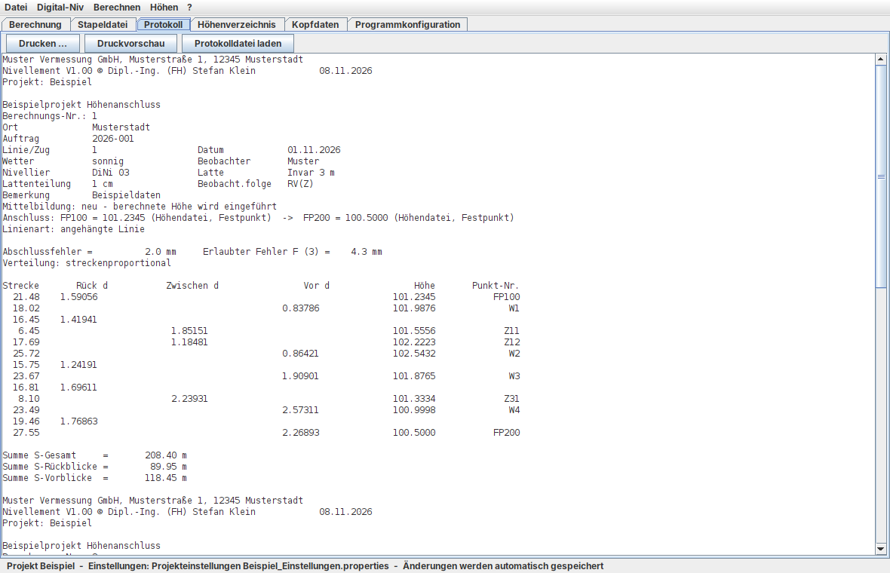
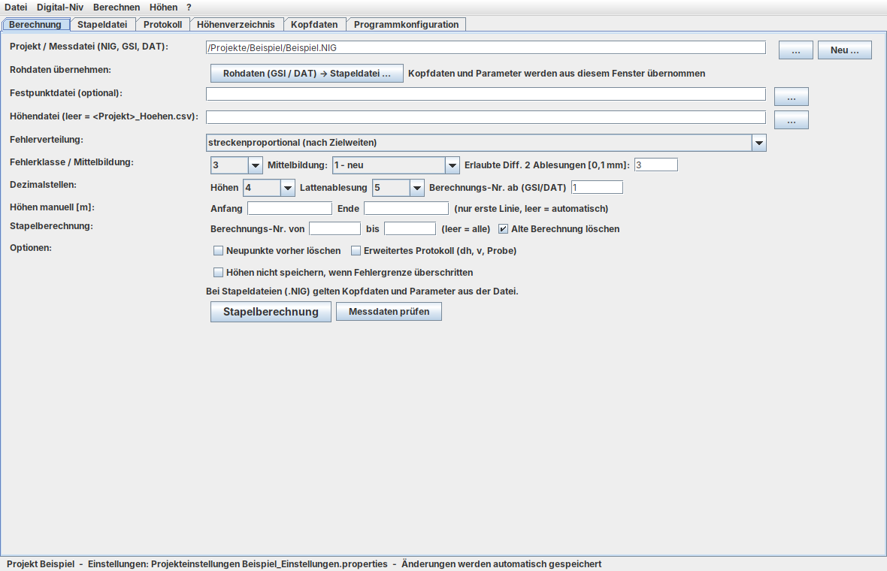

Abschlussfehler ermitteln, gegen die Fehlergrenze prüfen und auf die Aufstellungen verteilen. Direkt aus Leica- und Trimble-Digitalnivellieren, mit Höhenverzeichnis, Mittelbildung und Protokoll – und kompatibel zu vorhandenen NIGRA-Projekten.
Version 1.00 · ZIP, 36 MB · keine Installation, kein Java nötig · MIT-Lizenz

Alles, was für die tägliche Auswertung von Höhennivellements gebraucht wird – vom Einlesen der Rohdaten bis zum gedruckten Protokoll.
Leica GSI (GSI-8/16, z. B. DNA03, LS10/LS15, Sprinter) und Trimble DAT (DiNi) – mit deutschen und englischen Kennungen, mehrere Dateien auf einmal.
Angehängte Linien und Schleifen, Zwischenblicke, Doppelablesungen (RRVV, RVVR) mit Differenzkontrolle, ½-cm-Latte und Lattenkonstante.
Streckenproportional nach Zielweiten oder gleichmäßig je Aufstellung. Vier Fehlerklassen mit frei definierbarer Formel, z. B. 2 + 3*Sqrt(R).
Projekt-Höhendatei mit Festpunkten, Mittelbildung (mitteln, neu, vergleichen, ohne), Mittelbildungsprotokoll, Umnummerieren, Import und Export.
Feldbuchprotokoll mit Abschlussfehler, Fehlergrenze und ***-Kennzeichnung. Druck und PDF mit Firmenkopf und eigenem Logo.
Beliebig viele Linien in einer Stapeldatei, Berechnung aller oder einzelner Nummern, Editor mit Spaltenlineal, Prüfung der Messdaten.
Eine übersichtliche Oberfläche mit Registern. Alle Einstellungen werden automatisch gespeichert und in neue Projekte übernommen.

Klassische Auswertung ohne Ausgleichung – nachvollziehbar und im Handbuch vollständig beschrieben.
Abschlussfehler (Soll − Ist)Ausgaben werden geodätisch gerundet (Mitte zur geraden Ziffer). Alle Formeln im Handbuch
Der Vertrieb von NIGRA wurde Ende 2023 eingestellt. Vorhandene Projekte lassen sich mit Nivellement direkt weiterführen.
.NIG öffnen, bearbeiten und berechnen.MDB übernehmen – ohne Microsoft AccessProjekt.xml und Höhenverzeichnisse .ASCAbgleich mit realen NIGRA-6.2-Projekten:
| Prüfung | Ergebnis |
|---|---|
| 24 Nivellements, über 500 Punkthöhen | identisch |
| Abschlussfehler und Fehlergrenzen | identisch |
| Höhendatei mit Mittelbildung | identisch |
Ein Projekt ist ein Ordner mit einer Stapeldatei. Höhendatei, Protokoll und Einstellungen legt das Programm daneben an.
Datei → Neues Projekt oder eine vorhandene NIGRA-Stapeldatei öffnen.
GSI- oder DAT-Dateien wählen – jede Linie erhält Kopfdaten und eine Berechnungsnummer.
Im Höhenverzeichnis eintragen oder als ASCII bzw. NIGRA-MDB importieren.
Stapelberechnung starten, Protokoll prüfen, mit eigenem Logo drucken oder als PDF speichern.
ZIP herunterladen, entpacken, Nivellement.exe starten. Die Java-Laufzeit ist enthalten.
Für andere Systeme: java -jar app/Nivellement.jar mit Java 17 oder neuer.